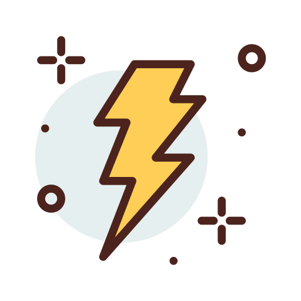

<ion-content>
  <div class="backgroud ion-text-left">
    <div class="title ion-text-center">Vaginal health</div>
    <ion-list class="lista">

      <ion-list-header><b>Feel or have the symptoms:</b></ion-list-header>

      <ion-radio-group>
        <ion-list-header>

          <ion-label><b>Bleeding</b></ion-label>
        </ion-list-header>

        <ion-item>
          
          <ion-label>Light</ion-label>
          <ion-radio slot="start" value="leve" checked></ion-radio>
        </ion-item>

        <ion-item>
          
          <ion-label>Medium</ion-label>
          <ion-radio slot="start" value="medio"></ion-radio>
        </ion-item>

        <ion-item>
          
          <ion-label>Intense</ion-label>
          <ion-radio slot="start" value="intenso"></ion-radio>
        </ion-item>

        <ion-item>
          
          <ion-label>Escape</ion-label>
          <ion-radio slot="start" value="escape"></ion-radio>
        </ion-item>

      </ion-radio-group>

      <ion-radio-group>
        <ion-list-header>

          <ion-label><b>Colic</b></ion-label>
        </ion-list-header>

        <ion-item>
          
          <ion-label>Low</ion-label>
          <ion-radio slot="start" value="fraca" checked></ion-radio>
        </ion-item>

        <ion-item>
          
          <ion-label>Medium</ion-label>
          <ion-radio slot="start" value="moderada"></ion-radio>
        </ion-item>

        <ion-item>
          
          <ion-label>High</ion-label>
          <ion-radio slot="start" value="forte"></ion-radio>
        </ion-item>

      </ion-radio-group>

    </ion-list>
    <div class="rodape ion-text-center">
      <ion-button href="/saude-vaginal" style="font-family: Verdana, Geneva, Tahoma, sans-serif"><b>back</b>
      </ion-button>
      <ion-button href="/opcoes" style="font-family: Verdana, Geneva, Tahoma, sans-serif"><b>menu</b>
      </ion-button>
      <ion-button href="/higiene" style="font-family: Verdana, Geneva, Tahoma, sans-serif"><b>next</b>
      </ion-button>
    </div>

    <ion-fab>
      <ion-fab-button href="/saude-vaginal-dois-dicas">
        
      </ion-fab-button>
    </ion-fab>

  </div>
</ion-content>